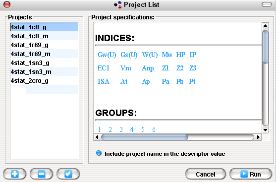

To execute many projects is used the Run Projects ( ) button is used, located in the toolbar or press F6 and select a "Project List" in the displayed window:
) button is used, located in the toolbar or press F6 and select a "Project List" in the displayed window:

Project List Window
In the "Project's" panel are shown all projects located in the Project's folder. In addition you can add, delete or select all items using the buttons below of this panel. In the "Project Specification's" panel is shown a brief description of a selected project, showing information like: indices, groups, aggregation_operators and parameters.
In addition you can use the "Include project name in descriptor value" option for include the project name in the descriptor name.